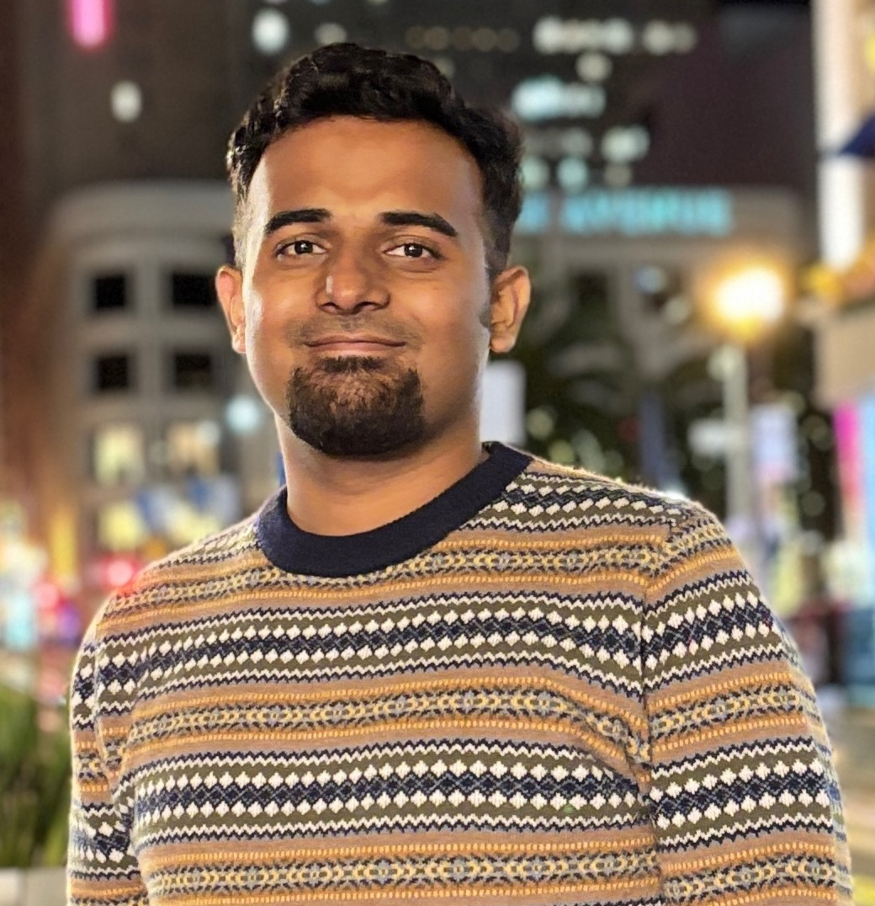

|
Waleed Bin Khalid
I'm a Robotics Engineer who is extremely passionate about autonomy and envisions a world, where robots and humans will coexist and cooperate for a variety of tasks, boosting both productivity and efficiency.
I want to work on robot autonomy using vision, AI, control theory, and robot learning. I am deeply interested in intelligent robots that can be used for different kinds of autonomous applications. Apart from robots, I also have a keen interest in the applications of Artificial Intelligence in different domains such as Medicine, Economics, etc.
I have done my Master's in Robotics from the Georgia Institute of Technology, Atlanta, GA, USA. I did my bachelor's in Electrical Engineering with double minors in Physics and Mathematics from Habib University, Karachi, Pakistan.
Apart from all of my tech interests, I love to travel alone, take photos, and try out new sports. I am an avid cricket fan and I also enjoy swimming, table tennis, and playing cards.
Email /
Google Scholar /
LinkedIn /
Resume
|

|
{kind=link}